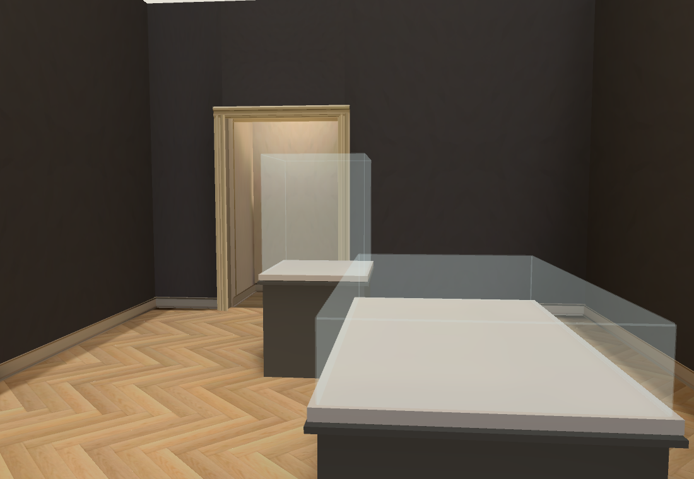
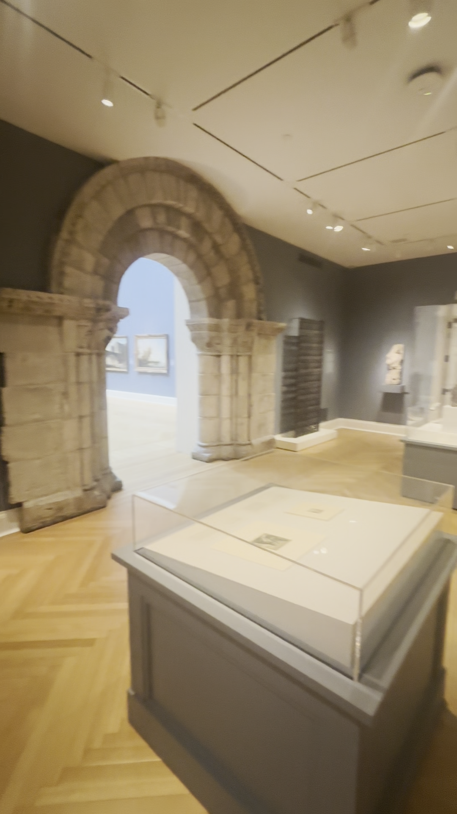
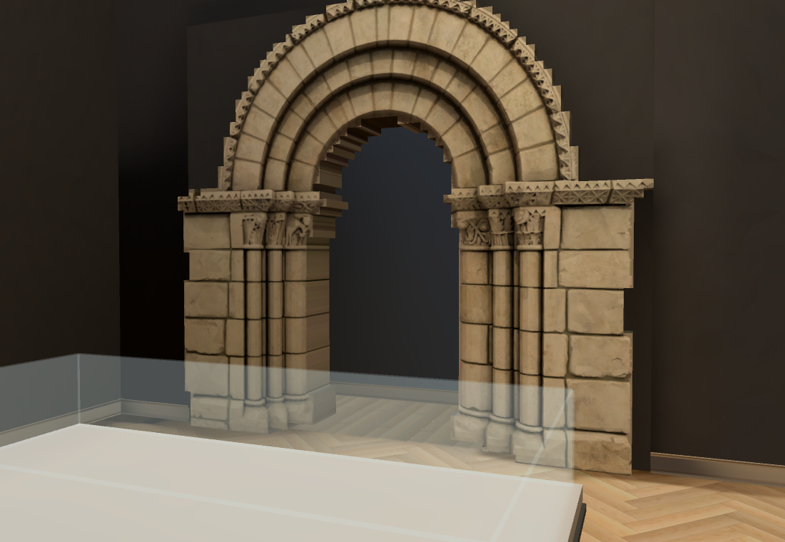
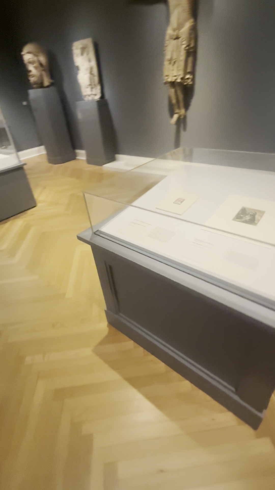
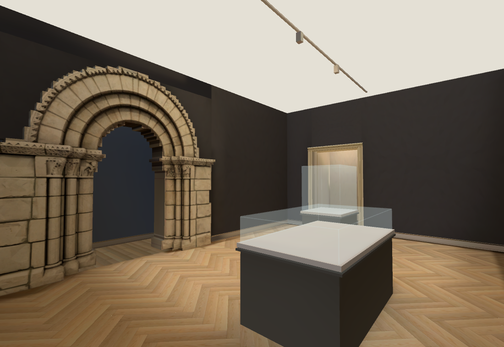

Collection rooms · medieval case placement
Walk the latest rooms · Previous doorway correction · Hall scale study
Press 2 for the European gallery, then continue through the far double doors into Renaissance and turn right through the stone tracery doorway.
Reciprocal wide shots show two distinct case shapes and a staggered arrangement: a broad low relief case towards the middle, south-west of a smaller taller case near the stair doorway. Those previously missing case shells now have grey solid bases, white trays and separate glass heights.
 Actual low case in the foreground and tall case towards the stairs, IMG_6382 78.25s.
Actual low case in the foreground and tall case towards the stairs, IMG_6382 78.25s.
New low and tall shells facing the same stair-side corner. Contents and wall sculptures are still missing.
Reciprocal view back towards the Romanesque portal, IMG_6382 88.75s.
Prototype view back towards the portal. Exact case dimensions/offsets remain provisional; the full Hall is not yet joined.
Source low glass hood, solid grey cabinet and white inset tray, IMG_6382 96.25s.
Current two-case arrangement. Room extents, ceiling tracks, wall palette and doorway positions still need refinement.Native RTX and RTX Chrome pass 66/66 collision/camera checks, including both case bases and two clear routes. Browser keyboard round trip also passes. Native p95 29.91ms; browser p95 28.79ms. Below the 60fps target. Rebuilt native lightmap: 589 surfaces. Repository checks pass; frozen owning Shell remains 44/50 with the recorded layout/pixel/timing failures.
No new paid generation this pass. Existing Muse architecture and Main Hall shaders/presentation are retained; cumulative spend $0.70 actual/$0.71 conservative. Case contents are deliberately marked incomplete; no catalogue identity or full reconstruction acceptance is claimed. Next: fit the Hall entrance offsets, then source/API match and build the missing case contents, wall artworks and sculptures. Heartbeat stays disabled; Collection only.